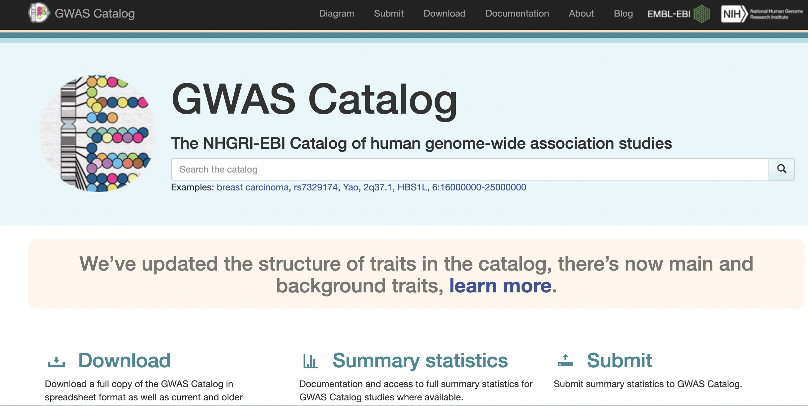

gwasrapidd/GWAS catalog API
Explored by:
PIMPLASKAR, ADITYA, LI, TERENCE WENTAO, KIM, SANDY SUNG- (Bioinfo 201 - Winter 2022)

Description:
The GWAS catalog was initiated by the National Human Genome Resource Institute to enable access to published GWA studies. These studies are identified by literature search by curators, who then extract trait information with relevant SNPs and metadata. Summary statistics and other various analyses are also made available. The GWAS catalog has its own REST API but returns data in a hierarchical JSON format. Gwasrapidd is an R package that provides the first client interface to the GWAS Catalog REST API, allowing users to bypass this JSON format to get data in a more tabular fashion. It enables users to quickly retrieve, filter and integrate data with comprehensive bioinformatics analysis tools, which is particularly critical for those looking into functional characterization of risk loci.
Use cases:
- Query GWAS database using a variety of criteria:
- Study access identifier for a particular GWAS
- Risk allele ID (RSID) for a particular allele
- Broader experimental factor ontology (EFO) traits
- Based on existing queries, identify related traits and associations
- Set operations to manage and filter queries
Our tutorial:
Citations:
-
Buniello A, MacArthur JAL, Cerezo M, Harris LW, Hayhurst J, Malangone C, McMahon A, Morales J, Mountjoy E, Sollis E, Suveges D, Vrousgou O, Whetzel PL, Amode R, Guillen
-
JA, Riat HS, Trevanion SJ, Hall P, Junkins H, Flicek P, Burdett T, Hindorff LA, Cunningham F and Parkinson H. 6The NHGRI-EBI GWAS Catalog of published genome-wide association studies, targeted arrays and summary statistics 2019.
-
Nucleic Acids Research, 2019, Vol. 47 (Database issue): D1005-D1012. Ramiro Magno, Ana-Teresa Maia, gwasrapidd: an R package to query, download and wrangle GWAS catalog data, Bioinformatics, Volume 36, Issue 2, 15 January 2020, Pages 649–650, https://doi.org/10.1093/bioinformatics/btz605